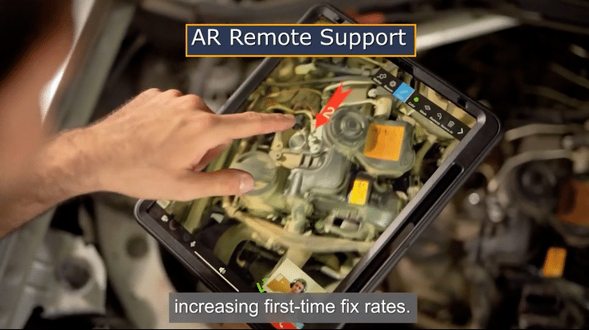

Official Partners with frontline.io
About frontline.io:
Frontline.io is a cutting-edge platform that revolutionizes the way organizations deliver training and support. We harness the power of AR, VR, and Digital Twin technology to simplify the learning experience and improve support efficiency. Our goal is to help businesses focus on what really matters: getting work done. Join us in our mission to revolutionize training and support.
1. Digital Twin - A light virtual comprehensive representation of a mechanical system created within hours out of a standard CAD. Uses for simulations and eliminates the need for physical models.

2. Interactive parts catalog - A full list of all the parts, including metadata and spare parts listing, accessible through the Digital Twin. Used for quick parts identification and ordering, the Parts Editor enables simple editing and sharing.

3. Remote support - An expert communication that guides the field personnel using AR, MR, video, annotation, and chatting tools. The remote training software saves travel time, improves First Time Fix, and increases Machine Up Time the Remote Support is seamlessly integrated with the Virtual Training Room.

4. Interactive flows and procedures - Interactive step-by-step 3D flows are used for training, support, and troubleshooting, Eliminating learning curve, always updated and performed on any device Flow runs are recorded into frontline.io analytics Flow and procedures creation is done by the Flow Editor and Animation Builder

5. Real-Time analytics - Real-time monitoring and recording of flow and remote assist session, enabling immediate response and continuous improvements process. Including steps performed, the decisions taken, and the user’s feed. The data is compatible with leading AI and BI systems.

Contact us for any further information at info@gfinnov.com